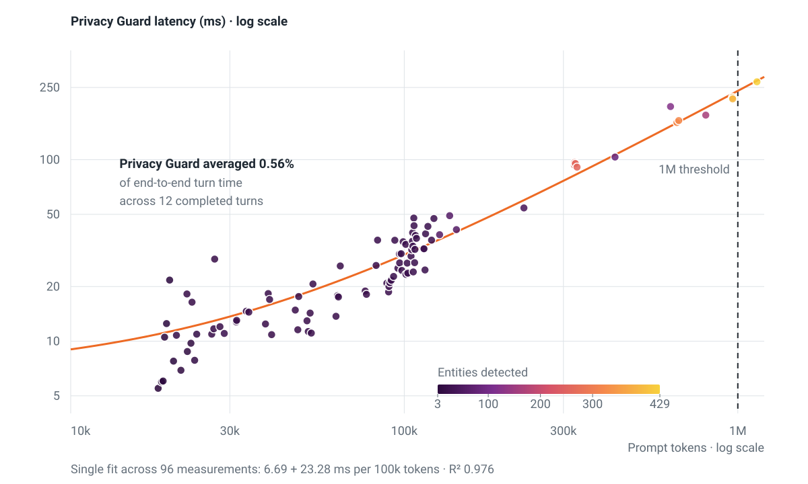

Limits and failure behavior¶
Privacy Guard enforces bounds at the transport, processor, engine, and result boundaries. Limit failures are atomic: they return no partial replacement text or partial findings.
Package-wide values are defined in
projects/privacy-guard/src/privacy_guard/constants.py.
Request and transport limits¶
| Item | Limit | Enforcement |
|---|---|---|
| Request body | 4 MiB | Service |
| Request context | 4 KiB | Service |
Policy config Struct |
64 KiB | Service |
| Target | 32 KiB | Service |
| Headers | 128 entries and 64 KiB total | Service |
| gRPC receive message | 5 MiB | gRPC server |
| Replacement body | 4 MiB | Service |
The gRPC allowance includes 1 MiB for the protobuf envelope above the advertised body limit.
A non-empty request body must be valid UTF-8. Detect and block leave the original bytes unchanged. Replace returns UTF-8 encoded final text.
Processing limits¶
| Item | Limit |
|---|---|
| Input or intermediate UTF-8 text | 4 MiB |
| Engine output UTF-8 text | 4 MiB |
| Stages per policy | 10 |
| Detections per stage | 256 |
| Detections per request | 4,096 |
| Default shared timeout | 1 second |
| Maximum shared timeout | 30 seconds |
| Active processing workers | 4 |
| Concurrent gRPC calls | 16 |
One monotonic timeout covers every stage and final result validation. A stage can consume the complete timeout budget. Detections remain subject to both the 256-per-stage and 4,096-per-request limits.
Set the processing timeout with:
OpenShell's middleware timeout must be longer than the Privacy Guard processing
timeout. Include headroom for worker queueing, configuration validation, and
processor preparation. add-gateway-registration writes a five-second OpenShell
timeout, so edit that registration before using a processing timeout of five
seconds or longer.
Finding and diagnostic limits¶
| Item | Limit |
|---|---|
| Diagnostic string | 1,024 UTF-8 bytes |
| Metadata entries per detection | 32 |
| Aggregated OpenShell finding groups | 32 |
| Encoded bytes per finding | 4 KiB |
Diagnostic bounds apply to stage names, entity names, metadata keys and values, and request IDs used in logs. Custom configuration fields such as model-profile names are bounded only when their engine config declares an explicit constraint. Invalid request IDs are replaced with a constant placeholder for logging and do not change evaluation.
If aggregated summaries cannot fit the OpenShell finding representation,
Privacy Guard returns privacy_guard_limit_exceeded with no partial findings.
Regex limits¶
| Item | Limit |
|---|---|
| Entities per catalog | 2,000 |
| Rules per catalog | 10,000 |
| Entity or supplied rule name | 128 ASCII bytes |
| Pattern | 16 KiB |
| Catalog file | 16 MiB |
| Compiled catalog cache | 128 entries |
| Compiled catalog cache weight | 32 MiB |
Entity and rule names use:
The 64 KiB policy transport limit still applies to inline catalogs. A catalog can fit Regex limits while being too large to send inline. Use a relative file-backed catalog in that case.
Regex execution controls¶
RegexEngine:
- rejects empty or invalid patterns
- rejects patterns that match empty input during validation
- rejects user-defined named groups and inline flags
- passes the shared remaining timeout into every backend search
- validates that each configured match consumed text
- caps detections before replacement
- calculates replacement UTF-8 size before allocation
- returns no partial detections or text after failure
The engine uses the timeout-capable regex package rather than Python's
standard re package.
Request outcomes¶
| Condition | Result | Reason or status |
|---|---|---|
| No policy detection | Allow | No deny reason |
Detection with detect |
Allow original | Findings |
Detection with replace |
Allow replacement | Findings |
Detection with block |
Deny | privacy_guard_blocked |
| Shared timeout expires | Deny | privacy_guard_limit_exceeded |
| Processing or result limit exceeded | Deny | privacy_guard_limit_exceeded |
| Invalid request or config | RPC failure | INVALID_ARGUMENT |
| Engine or service failure | RPC failure | INTERNAL |
Policy and limit denials are successful gRPC results. RPC failures use the
OpenShell middleware registration's on_error behavior.
Respond to a limit denial¶
When a request returns privacy_guard_limit_exceeded:
- inspect Privacy Guard logs for the content-safe limit kind
- reduce request or replacement size
- reduce detections, stages, or rules
- simplify expensive Regex patterns
- increase
--timeout-secondswhen processing time is the bound - increase the OpenShell middleware timeout with additional headroom
Do not retry the same request without changing the limiting condition.
Error information¶
Production errors use stable PrivacyGuardError codes. Error responses and
logs do not expose raw Pydantic, regex backend, protobuf, engine, or collaborator
exception messages.
Expected custom-engine failures must be translated into Privacy Guard's content-safe engine exception hierarchy.
Logging¶
Default operational logs include:
- request ID
- evaluation duration
- allow or deny decision
- aggregate finding count
- stable error code
- stage and strategy at debug level
Default logs exclude:
- input and replacement text
- matches and surrounding text
- offsets
- Regex patterns and catalogs
- headers, targets, and credentials
- model endpoints
- arbitrary exception text
--debug adds content-safe diagnostics.
--debug-log-content logs complete input and processed text. Enable it only in
a controlled development environment.
State and retention¶
Privacy Guard retains one active validated policy and its configured engines until replacement or shutdown. It does not retain request text, detections, or replacement mappings across requests.
The compiled Regex cache is separate from the active processor:
| Cache property | Value |
|---|---|
| Entry cap | 128 catalogs |
| Weight budget | 32 MiB |
| Entry weight | Canonical catalog bytes plus 4 KiB per rule |
An entry larger than the cache budget can be used for the current operation but is not retained. Cache eviction does not invalidate an active processor that already references compiled rules.
Measured latency¶
The following proof-of-concept data uses the built-in RegexEngine with
synthetic repeated text. It contains 96 service-duration measurements from
18,291 to 1,140,979 prompt tokens and 3 to 429 detections per request.

Across the 12 completed large-context turns with end-to-end timing, Privacy Guard service processing averaged 0.56% of request-admission-to-last-output time.
Use these measurements for proof-of-concept timeout planning only. Prompt size and detection count increased together, and the run used one host, sandbox, policy, and Claude Code session. Measure production engines, policies, inputs, and concurrency in the target deployment.
The source data and deterministic renderer are in the
projects/privacy-guard/analysis
directory.
Changing a limit¶
For maintainers:
- identify every layer that enforces or advertises the limit
- update exact-boundary tests
- verify the failure result immediately above the boundary
- update policy schema and examples when affected
- run
make checkfromprojects/privacy-guard - benchmark changes that affect compilation or request processing
- coordinate protocol changes with OpenShell